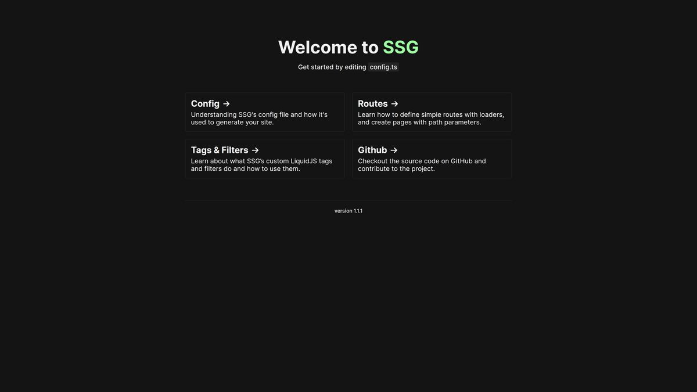

This is a minimal, but very flexible and powerful static site generator that is built around Express and LiquidJS. It also has filters for image optimisation and markdown.
Node
Typescript
Express
LiquidJS
FS
Sharp

Introduction
Static Site Generator does as it sounds: It statically generates sites. It has two scripts, one for development and one for production. The development one will spin up an ExpressJS server that renders the Liquid templates on request, where the production script will parse the templates and then write them to the dist directory ready for deployment.
Along with the built-in filters and tags that come with LiquidJS. We also have a few custom filters for optimising images, setting relative paths for files and parsing markdown.
A core feature for this project is something we call loaders. These are functions that are executed before rendering a route and any data they return is passed down to the corresponding Liquid template where the data can be used.
As this is a boilerplate project, all of the core logic for serving routes and rendering files is accessible through the 'core' directory. This direction was chosen over making it an external library that is imported to keep everything open and adaptable. Its meant as a jumping-off point.
Examples/Preview
For an example of a site built using SSG, look no further! This portfolio was built using SSG as a starting point and showcases some more complex functionality with Express path variables and pagination for the blogs and projects routes.
Learn More
For more in depth details and examples on all of the features please take a look at the README in the GitHub repository.